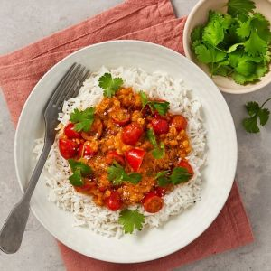

PowerPlant
Krämig Lins- och Kokosgryta med Spenat
Om rätten
Krämig och härligt matig linsgryta smaksatt med vitlök, curry och sambal oelek och gjord med kokosmjölk för extra krämighet.
Servera med ris, halverade småtomater och toppa med färsk koriander.
Information
| Tillagningstid: Under 30 min | Portioner: 4 | Svårighetsgrad: Medel |
Ingredienser
|
 |
Tillagning
|
Näringsvärde per portion
|